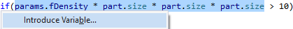
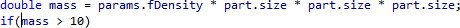

Introduce Variable
Replace an expression, or multiple occurrences of an expression, with a temporary variable that explains the purpose of the replaced code. Select an expression and invoke Introduce Variable via the Quick Action and Refactoring menu (Shift+Alt+Q).

Specify a descriptive name for the new variable in the dialog that opens. Then, Introduce Variable defines the variable and replaces your expression with a reference to the variable.
